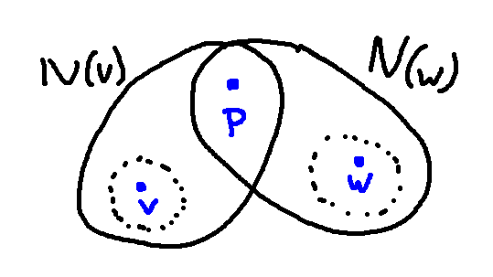
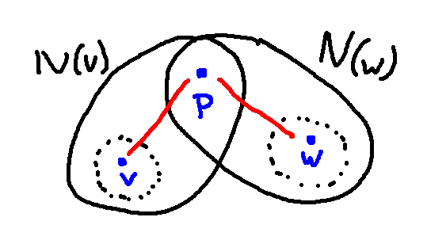

Here's another claim that we can prove by contradiction. It's an example where the form of the claim doesn't obviously suggest contradiction as a method.
Claim: Suppose that G is a graph with n nodes. If all the nodes have degree \(\ge \frac{n-1}{2}\), then G is connected.
The main idea is that if you put enough edges into a graph, appropriately spread out, eventually there has to be a way to get from any node to any other node. It's not immediately obvious why the magic number is \(\frac{n-1}{2}\) edges touching each node, but that is a fairly large number of edges for a graph that has only n nodes.
Before we start the proof, a bit of notation. Suppose that x is a node in a graph. Then N(x) is the set of all "neighbors" of x, i.e. all nodes directly connected to x by an edge. Notice that N(x) does not include x.
In this case, we need a bit of set-up before we have something appropriate to contradict.
Proof: Suppose that G is a graph with n nodes and all nodes have degree \(\ge \frac{n-1}{2}\). Let v and w be nodes in G. We need to show that there is a walk from v to w.
We're going to use proof by contradiction to show that the walk must exist.
Suppose not. That is, suppose that there is no walk from v to w.
Normally it's unhelpful to have negative information like this. But we have a secret goal: to prove that several sets are disjoint (non-overlapping) so that we can easily add up the number of elements in their union. So let's look at some of the consequences of the lack of a walk from v to w.
Notice that there is a zero-length walk connecting any node to itself. So if v and w were the same, there would be a walk between them.
Since there is no walk from v to w, v and w can't be equal.v and we also can't be neighbors. So N(v) can't contain w, and it was defined not to contain v. Similarly, N(w) can't contain either v or w.
More interestingly, N(v) and N(w) can't intersect. Let's draw a picture of what would happen if there was a point (call it p) in both sets. The dotted lines are to remind us that v is not in N(v) and w is not in N(w).

Remember that N(v) contains all the nodes connected to v with an edge, and similarly for N(w). So the situation must actually look like this.

But we assumed that there is no walk from v to w. So there can't be a point in both N(v) and N(w). Let's write this into the proof:
Since there is no walk from v to w, v and w can't be equal. (There is a zero-length walk connecting any node to itself.) They also can't be neighbors. So N(v) can't contain w, and it was defined not to contain v. Similarly, N(w) can't contain either v or w.Also, since there's no walk from v to w, v and w can't have a common neighbor. So N(v) and N(w) can't intersect.
So the sets N(v), N(w), and {v,w} are all disjoint.
OK, now what? Time for Rule #1 of writing proofs: use all the given information. We've never used the fact that all nodes have degree \(\ge \frac{n-1}{2}\). Let's use this to calculate the size of \( N(v) \cup N(w) \cup \{v,w\}\).
Since N(v), N(w), and {v,w} are all disjoint, we have \( |N(v) \cup N(w) \cup \{v,w\}| = |N(v)| + |N(w)| + |\{v,w\}| \).Since every node has degree \(\ge \frac{n-1}{2}\), N(v) contains at least \(\frac{n-1}{2}\) nodes, and N(w) contains at least \(\frac{n-1}{2}\) nodes.
So we have \( |N(v) \cup N(w) \cup \{v,w\}| = |N(v)| + |N(w)| + |\{v,w\}| \ge \frac{n-1}{2} + \frac{n-1}{2} + 2 = (n-1) + 2 = n+1 \)
So \( |N(v) \cup N(w) \cup \{v,w\}| \ge n+1 \)
Have you lost track of what we're trying to do? That would be understandable. We're trying to find some sort of contradiction, because that will show that we were wrong about there being no walk from v to w.
So \(|N(v) \cup N(w) \cup \{v,w\}| \ge n+1\). \(N(v) \cup N(w) \cup \{v,w\}\) is a subset of the nodes of G. But G contains only n nodes. So we have a contradiction.We assumed that there was no walk from v to w, and that led to a contradiction. So there must be a walk from v to w.
Since v and w were arbitrarily chosen, this means there is a walk between any two nodes in G. So G is connected.
This proof is long enough that it's important to include the summary sentences at the end. If the reader has been carefully following all the details in the middle of the proof, they may have lost track of the main outline.